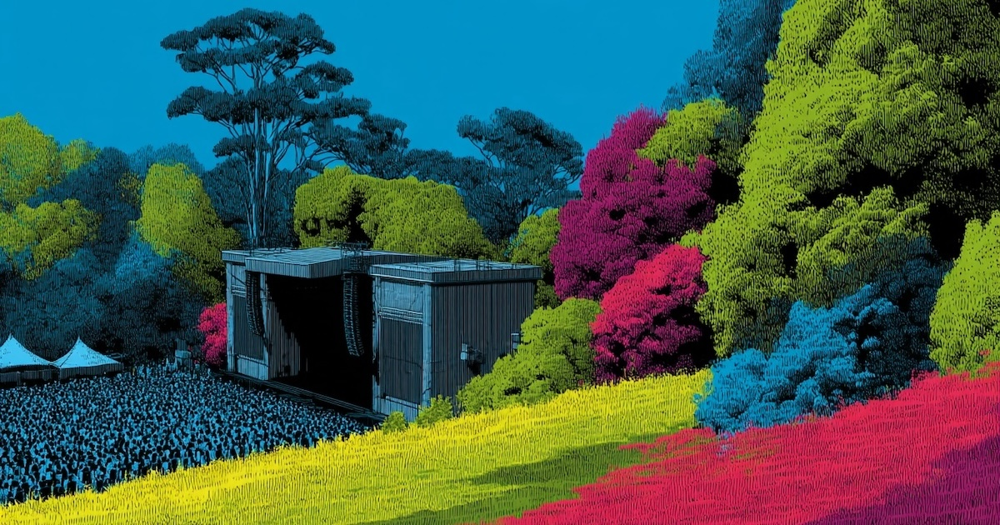

def get_artist_id(sp, artist_name):
results = handle_spotify_rate_limits(sp.search, q=artist_name, type='artist', limit=1)
items = results.get('artists', {}).get('items', []) if results else []
if items:
return items[0]['id']
print(f"❌ Artist not found: {artist_name}")
return None
def get_top_tracks(sp, artist_id, market='US'):
result = handle_spotify_rate_limits(sp.artist_top_tracks, artist_id, country=market)
if not result:
return []
tracks = []
for track in result['tracks'][:MAX_SONGS_PER_ARTIST]:
tracks.append({
'uri': track['uri'],
'name': track['name'],
'artist': track['artists'][0]['name']
})
return tracksFestival Playlist Generator
A cursor and ChatGPT project to automate spotify and youtube playlists from a list of artists

Introduction
As a music enthusiast planning to attend Outside Lands 2025, I found myself wanting to explore the lineup before the festival. The traditional approach of manually searching for each artist and their top songs seemed tedious. This sparked an idea: why not automate this process? What started as a simple script to create a Spotify playlist evolved into a comprehensive tool that generates playlists across multiple platforms.
The full code and documentation are available in the project repository, along with detailed setup instructions and configuration options.
The Problem
Festival lineups are typically presented as static images or text lists, making it challenging to: 1. Quickly discover new artists 2. Find the most popular songs from each artist 3. Create organized playlists for different days 4. Share the music with friends across different platforms
The Solution
I built a Python script that: - Takes a list of artists from a festival lineup - Searches for each artist on Spotify - Creates a playlist with their top tracks - Optionally creates a matching YouTube playlist - Handles API rate limits and errors gracefully - Tracks progress and manages API quotas
Implementation Journey
Step 1: Getting the Artist List
First, I needed to convert the festival lineup into a machine-readable format. I took a screenshot of the day’s lineup and used ChatGPT to extract the artist names into a JSON file:
[
"Artist Name 1",
"Artist Name 2",
"Artist Name 3"
]Step 2: Spotify Integration
The core functionality uses the Spotify API to: - Search for each artist - Get their top tracks - Create and populate a playlist
Here’s the key Spotify-related code:
Step 3: YouTube Integration
Why stop at spotify, let’s add YouTube support: - Create a matching YouTube playlist - Uses Brave Search API for efficient video discovery - youtube search API takes up a lot of daily quota - Manages YouTube API quotas to prevent hitting limits
def search_youtube_video(query):
"""Search for a YouTube video using Brave Search API."""
try:
search_query = f"site:youtube.com/watch {query} official"
encoded_query = quote_plus(search_query)
response = requests.get(
BRAVE_SEARCH_API_URL,
headers=BRAVE_SEARCH_HEADERS,
params={
"q": search_query,
"count": 1,
"safesearch": "moderate"
}
)
if response.status_code == 200:
data = response.json()
if data.get('web', {}).get('results'):
video_url = data['web']['results'][0]['url']
return video_url
except Exception as e:
print(f"❌ Error searching for video: {e}")
return NoneStep 4: Progress Tracking and Error Handling
To make the script robust and resumable: - Saves progress in a JSON file - Tracks processed tracks to avoid duplicates - Manages API quotas - Handles rate limits and errors gracefully - Can run again to resume progress of long playlist uploads
def load_progress():
if os.path.exists(PROGRESS_FILE):
with open(PROGRESS_FILE, 'r') as f:
return json.load(f)
return {
'spotify_playlist_id': None,
'youtube_playlist_id': None,
'processed_tracks': [],
'quota_used': 0,
'last_reset': datetime.datetime.now().strftime('%Y-%m-%d')
}Key Features
Multi-Platform Support
Smart Search
- Uses Spotify’s artist search
- Leverages Brave Search API for YouTube videos
- Handles ambiguous artist names
Progress Management
- Resumes from last position
- Prevents duplicate tracks
API Optimization
- Manages rate limits
- Tracks quota usage
- Handles errors gracefully
Future Improvements
- Enhanced Search
- Add fuzzy matching for artist names
- Platform Expansion
- Add support for Apple Music
- Include SoundCloud integration
- Support for other streaming platforms
- User Interface
- Create a web interface
- Add progress visualization
- Include playlist customization options
- Automation
- Cron jobs to automatically pick up progress next day and resume uploads
- End-to-end image to playlist support
Technical Details
The project uses: - Python 3.7+ - Spotify Web API - YouTube Data API - Brave Search API - FastAPI for the web interface - Pydantic for data validation - Async operations for better performance
Getting Started
To use the script: 1. Set up API credentials for Spotify and YouTube 2. Install the required dependencies 3. Create an artists.json file with your festival lineup 4. Run the script and enjoy your new playlists!
The full code and documentation are available in the project repository, along with detailed setup instructions and configuration options.